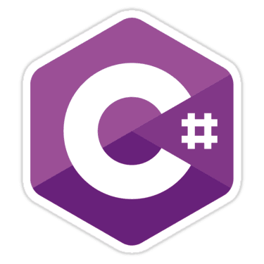

Formación Academica
Instituto Profesional Los Leones
Soy alumno Titulado de la Carrera Analista Programador en el Instituto Profesional los Leones.
Durante mi formación academica aprendí lenguajes de programacion como C#, JAVA,
así como también bases de datos Mysql PlSql entre otras tecnologías.
Además adquirí una fuerte base de trabajo en equipo y orientación por el aprendizaje constante
Platzi
Platzi es una plataforma de educación online enfocada a las tecnologías orientadas a Internet, como programación, marketing, diseño de interfaces, experiencias de usuario entre otras.
Soy estudiante activo en esta comunidad desde el 2017 y he logrado adquirir conocimientos y certificaciones principalmente orientadoas al desarrollo web Como PHP, LARAVEL, Git y GitHub entre otras.
CertificacionesExperiencia Laboral
Dues Ltda
Cargo
Desarrollador web
Soporte Técnico Computacional
Durante mi estancia en Dues desarrolle una plataforma interna para Call-Center, la cual gestiona el flujo de información interno derivado de los llamados
Realizado por los teleoperadores.
Con la información recaudada gestiona Delivery para el retiro de documento mediante los perfiles de operaciones y rutero.
Finalmente con toda la información Recaudada entregar informes visuales de la información en tiempo real
Tecnologias
- PHP - Laravel
- Javascript - JQuery
 - Ajax - Json
- Ajax - Json - Bootstrap
- Eloquent - MySql

- Git - GitHub Cpanel
Perfil Profesional
Extracto
Me describo a mí mismo como un amante de la tecnología y aprender algo nuevo cada dia.
Soy una persona responsable, puntual y comprometida con lo que hace.
Me gusta estar en constante aprendizaje y enfrentarme a nuevos retos.
Actualmente me encuentro fuertemente enfocado en el desarrollo de aplicaciones web mediante tecnología como Laravel (Framework de PHP) Bootstrap (FrameWork de FrontEnd), JavaScript, JQuery y AJAX.
Además de esto actualmente estoy trabajando en un proyecto personales en Angular 4 usando algunas apis de google como GoogleMaps y GeoCoding
Aptitudes
- HTML5 - PHP - Laravel - JQuery - Ajax
- MySql - Sql - Eloquent - Pl-Sql
- Javascript - Json - Angular 4 - Firebase

- Bootstrap 3 - Bootstrap 4 - CSS3
- Git - GitHub - Cpanel - Java - C# 
- Windows - Linux - Osx